The following list of cafes are reviewed on this page. Some of the reviews on this page are years old, and we only do updates for Cambridge every few years, so some reviews indicate when we last visited.
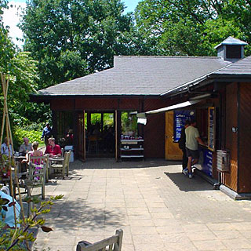
Botanical Garden cafe (Cambridge Coffee Company), Bateman Street (entrance)Good for: getting away from town and sitting in the sun
This is an excellent location for an afternoon's reading in the sun if it's too hot to walk to Granchester, or if you just can't be bothered. The cafe itself seems to have the right kind of things on offer, although on a hot Sunday afternoon all I wanted was a cup of tea. The furniture is good - wooden benches, chairs and tables, with a good mix of sun and shade.
Last visit: June 2004
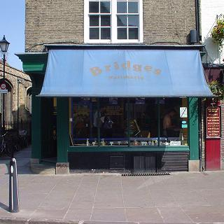
Bridges Patisserie, Bridge StreetGood for: snacks
British bakery meets noodle bar here, in a typically Cambridge international mix, with a few onion bhajis and samosas thrown in for the incongruity. The window stools have a nice view of the blissfully traffic-reduced Bridge Street, making this a pleasant spot for a snack and a drink.
Last visit: July 2010
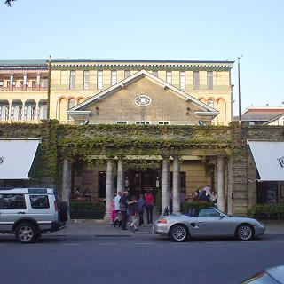
Browns, Trumpington Street; tel. +44 1223 461655Browns is a busy English colonial style restaurant complete with big fans and jazz pianist. Browns is bright and fun, always filled with bustle and attracts a varied crowd. The food is mostly English and rather good; the menu is large which is handy when you go back for the sixth time. They do not accept reservations after 6 p. m. so you may have to sample the cocktails at the bar while you wait for a table. Browns is justly popular. If you haven't already, try the fairly original pasta dishes followed by every single dessert on the menu.
Verdict: go with anybody and everybody, and eat one of the fish specials or the excellent steak and Guinness pie.
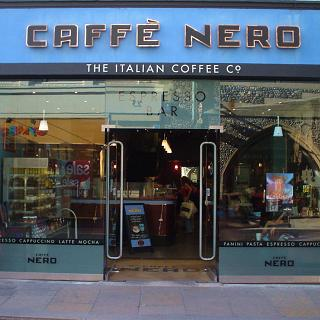
Caffe Nero, Market StreetGood for: coffee, snacks
This is the most stylish of Cambridge's cafe chain 'outlets' and avoids Starbucks' familiar soullessness. Unfortunately, its deserved popularity makes it difficult to get a seat at the weekend. I guess Cambridge just needs more cafes.
Last visit: August 2004
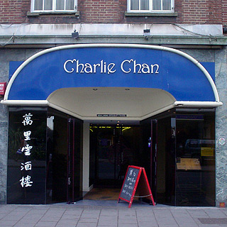
Charlie Chan, 14 Regent Street; tel. 359336Top quality Chinese restaurant which narrowly missed being my favourite, but might be now, now that Tai Cheun has changed. The menu is interesting, the food good and the service attentive. The decor is understated, unless you eat in the upstairs room which goes beyond naff with its black walls, chrome, strip lights and mirrors.
Verdict: go once to try it out and eat the crispy duck of course!
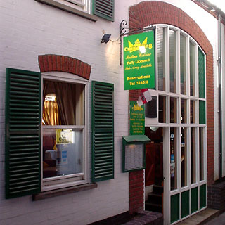
The Curry KingThis small and cosy Indian restaurant is surprisingly good: the good food, service and atmosphere are not at all what the tacky green and yellow sign out on Bridge Street or the name suggests. It might be the small size that helps with the pleasant atmosphere.
The first time we went, the Bollywood soundtracks are kept down low and there wasn't too much other noise. The staff never forgot us either, not that the downstairs room is big enough for anyone to be ignored. More than that, perhaps, the big jug of water that came straight away told us what to expect. Besides, that's a welcome addition to the poppadums and John Smiths. I enjoyed the food; I may be easy to please when I've gone so long without a good curry, the lime rice with chick peas was especially tasty.
My second visit, in June 2004, was rather different on account of the 26 students at the next table celebrating the end of the year; that'll teach me to be in Cambridge during May week. Still, that was no excuse for the sloppy service typified by cutlery just being dropped on the table in front of each of us. The food was still good, but I'll reserve judgement on the atmosphere and service.
Verdict: best Indian food in the centre of town.
This old lunchtime staple has quite a bit of outside seating, to go with an extensive lunch menu. The happily secluded internal courtyard can be a sheltered sunny spot, and that sort of thing is always popular. By the time we could not take any more of the burning sun, there were several people hanging around ready to take our places.
Last visit: May 2026
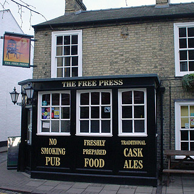
Free Press, 7 Prospect RowA tiny place hidden away in a quiet back street, Free Press is a proper pub with proper beer and good food, which is distinguished by its enlightened smoking policy: you may not. The food is good - may favourite lunch is the large portion of game pie with side salads.
Verdict: go for lunch with a couple of friends and have a meal and a couple of pints. Hell, fill the place and have lots of pints.
Last visit: May 2026
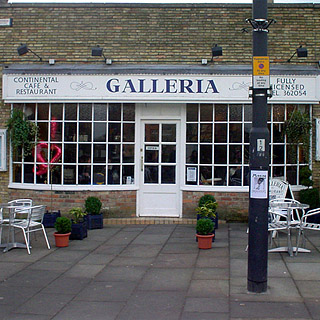
Galleria, Bridge Street.This cosmopolitan restaurant is worth investigating on account of its fairly unusual menu and its rather special narrow terrace at the river's edge. The food is marvelous and the atmosphere one of the best around. Galleria has a similar down-to-earth but slightly posh style to Browns.
Going back to Galleria, I liked it much more than I had the first time, probably because it's less intense at lunch time.
Verdict: have interesting pasta dishes for lunch with friends, and take your date there later on.
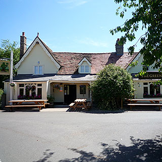
The Green Man, GranchesterSunday lunch in Granchester is something of an institution in Cambridge, and The Green Man has the best pub lunch, having slightly more original food than the Rupert Brooke and more of a real pub atmosphere.
Best of all is the 'Sorry No Children' sign, which makes The Green Man worlds apart from The Red Lion opposite, which has a kiddies' playground area inside that seems to be designed to generate the maximum amount of screaming. I'm sure they're all little darlings, but they tend to spoil appreciation of my pint of beer.
The menu includes some weird Anglicised versions of Mexican food that is actually rather good. My chicken burrito looked more like a lasagna, but it tasted excellent and contained a suitably large quantity of fresh chillies. The Sunday Roast got a general thumbs up, although it was still closer to cheap 'pub food' than the mythical Real Thing.
To accommodate the crowds, there are lots of tables in the garden that stretches from the back of the pub to the footpath from Cambridge. On our last visit, on a deserted weekday afternoon, this was the ideal spot to enjoy a plate of fish and chips and a beer, both excellent.
Verdict: go with visitors to Cambridge, for the walk along the river from Cambridge, and the sheer quaintness of it all.
Last visit: July 2010
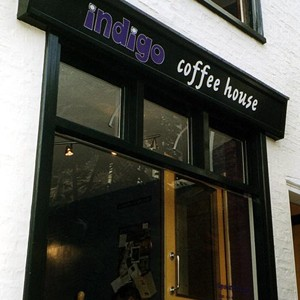
Indigo Coffee House, St Edwards PassageGood for: coffee, snacks, coffee and coffee
Starbucks' huge coffees used to impress me, but then I was converted to Indigo Coffee House's audacious three-shots-of-espresso-and-marshmallows effort. As well as being small, Indigo Coffee House is a much more friendly experience than the other nearby cafes. Indigo Coffee House is cheerful and relaxed - a healthy antidote to the latest crop of production-line coffee 'outlets'. Sitting around downstairs or in the colourful room upstairs feels like being at your mate's place, except that the coffee and hot snacks are good. Clearly Claire Hawkins, proprietor, doesn't plan to leave the student culture behind.
The only problem with the massive success that's inevitable for something this good is that you have to be really persistent to find somewhere to sit in somewhere this small. I recommend arriving at 9 a.m. and serial-drinking coffee for as long as you can take it.
Verdict: friendlier than your best mate, and probably more popular
Last visit: August 2017
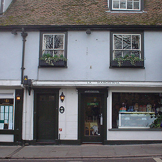
La Margherita, Magdalen Street (Bridge Street)This refreshingly unpretentious Italian restaurant serves good, but not outstanding, food. The pasta is probably better than the pizzas, and the best time to go is on a Monday or Tuesday evening when there is a very good folk guitarist who strums his stuff unobtrusively in the corner.
Verdict: go with your best friend and try the seafood risotto.
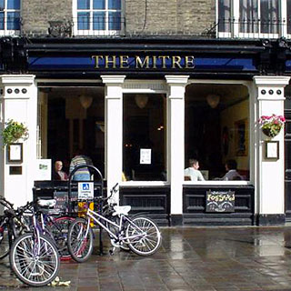
The Mitre, 17 Bridge StreetI do not normally go into pubs when I am out reviewing cafes, but last time I walked past here I could not resist a pint of Timothy Taylors Landlord and an hour on the comfy leather sofa by the window with my book. Despite the popularity of sofas in pubs these days, few are actually a good place to chill out - like a good cafe. In here, though, it is more like the lounge of a nice old-fashioned hotel, with worn leather and lots of bare wood around, and plenty of greenhouse effect from the huge front window in the afternoon.
Last visit: August 2004
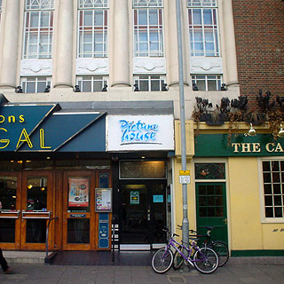
Picturehouse Cafe, St Andrews StreetGood for: tea, coffee, cinema
The Picturehouse cafe has the best ambiance, with its big open studio-like space, whose big windows make it particularly light during the afternoon, and its selection of classic music. Best of all, of course, is the surprisingly large collection of surprisingly comfortable sofas, which are complemented by a big stack of newspapers (the Independent). Oh, and it has its own three-screen cinema that frees you from ever having to endure that other place.
Last visit: May 2026
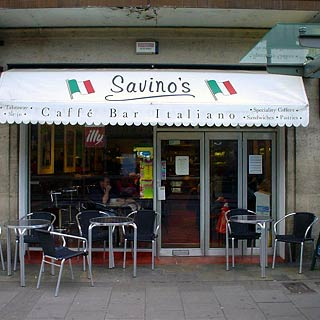
Savino’s, Emmanuelle StreetGood for: coffee
Authentic Italian urban cafe that is a good place to pop in for a good coffee, but not the sort of atmosphere to hang around in.